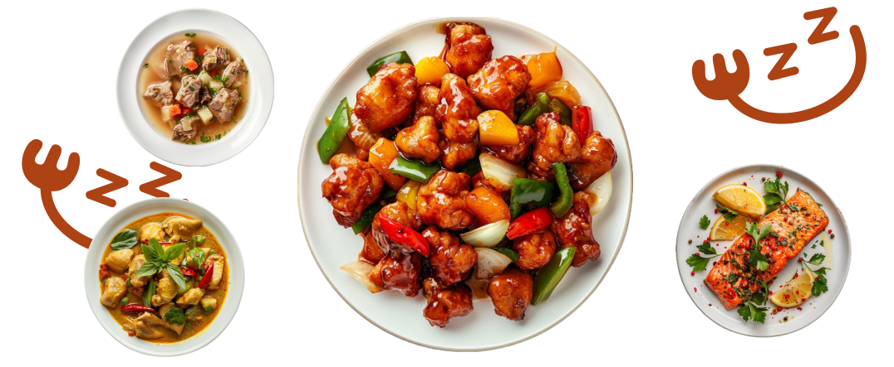

<%- include('./layout/header'); -%>

懶人必備!
下單即送到府
懶人指引
前往商品
1. 平日繁忙，沒時間料理?
2. 稍稍下單，選擇你喜愛的餐點
3. 新鮮食材沒煩惱，無壓享受
4. 立即享受健康美味，輕鬆自在!
Q & A
1. 訂購後的配送和運送時間是多久？
我們的配送服務就像一個神秘的快遞精靈,通常需要3-5個工作日將您的美味食材送到家!訂單處理一般需要1-2個工作日,您可以使用訂單追蹤功能來查看您的食材旅行到您家的進度哦!
2. 收到的商品有問題，我該怎麼辦？
萬一您的食材遇到了“小麻煩”,別擔心,我們的客服小天使會幫您解決!請在收到後的48小時內聯繫我們,告訴我們問題,我們會迅速處理退換貨或退款事宜。
3. 付款方式有什麼選擇？
我們提供多種付款選擇,包括信用卡、網路銀行轉帳、行動支付(如Apple Pay、Google Pay)和貨到付款。您可以在結帳時選擇最適合您的付款方式。
4.商品如何保存 ?
所有產品都會根據其特性進行適當包裝。半成品食材通常會有保鮮包裝或冷藏。收到包裹後,請按照包裝上的保存說明進行處理,以保持食材的新鮮度。
5. 是否提供團購服務？
我們提供團購服務。如果您有興趣進行團購,請聯繫我們的客服團隊,我們會根據您的需求提供詳細的資訊和優惠方案。我們的客服可以幫助您安排合適的訂單量和配送安排。
<%- include('./layout/footer'); -%>